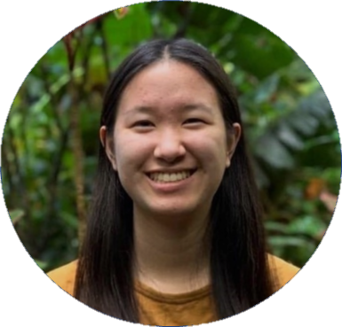

<div id="aboutMeContainer" class="container text-center">
  <div class="row align-items-center">
    <div class="col-md-6">
      <br><br>
    </div>
    <div class="col-md-6 pt-2">
      <h2 class="display-4">Hey, here's a little about me!</h2><br><br>

      <p class="lead pb-5">
        I grew up in San Jose, California and I am currently an undergraduate studying Computer Science at University of California, Irvine.
        Coding is my passion, and I love to be constantly learning new programming skills and gaining knowledge in various areas within Computer Science.
         If you would like to read about my coding journey, scroll down!
         My other hobbies include running/exercising, watching movies (especially action and sci-fi/fantasy), and reading.
         Fun facts—I’m a huge Potterhead and I have a fraternal twin sister!
      </p>

      <hr class="bg-secondary">

      <a href="https://www.linkedin.com/in/jessicashu7" target="_blank" class= "btn btn-light logoButton">
        
      </a>
      <a href="https://github.com/jessicashu7" target="_blank" class= "btn btn-light logoButton">
        
      </a>

    </div>
  </div>
</div>
